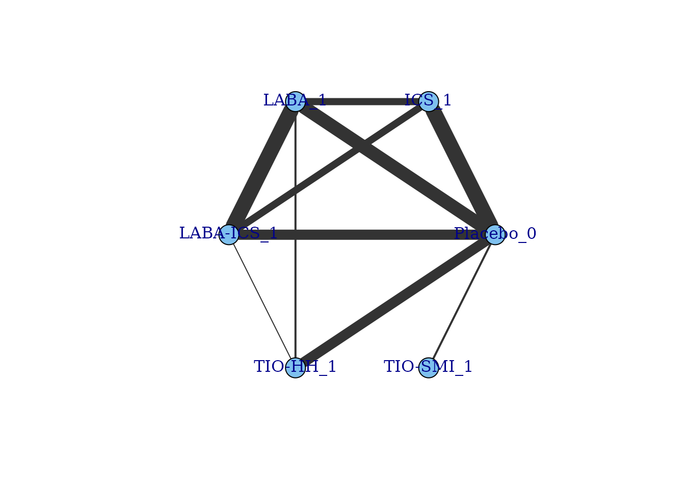
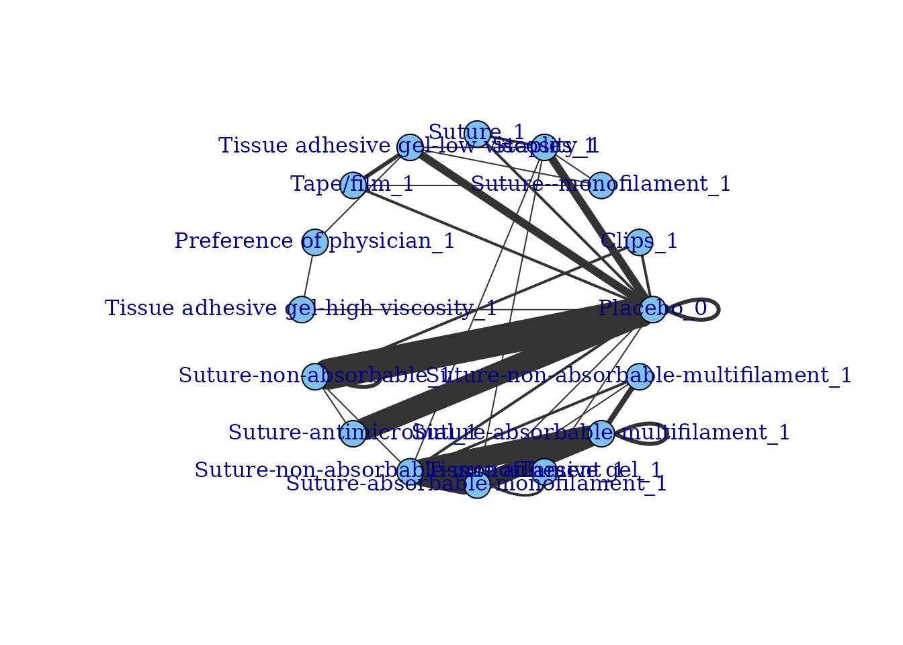

nma_in_mbnmadose.RmdAlthough MBNMAdose is intended to be used for
dose-response Model-Based Network Meta-Analysis (MBNMA), it can also be
adapted to perform standard Network Meta-Analysis (NMA), and this allows
users to take advantage of some of the additional features of
MBNMAdose, such as modelling class effects, for use in
standard NMA. As well as fitting class effect models,
MBNMAdose also allows for nodes-splitting to check for
consistency in these models.
To illustrate how this can be done we will use a dataset of inhaled
medications for Chronic Obstructive Pulmonary Disease (COPD) from the
netmeta package:
library(netmeta)
#> Loading required package: meta
#> Loading required package: metadat
#> Loading 'meta' package (version 7.0-0).
#> Type 'help(meta)' for a brief overview.
#> Readers of 'Meta-Analysis with R (Use R!)' should install
#> older version of 'meta' package: https://tinyurl.com/dt4y5drs
#> Loading 'netmeta' package (version 2.9-0).
#> Type 'help("netmeta-package")' for a brief overview.
#> Readers of 'Meta-Analysis with R (Use R!)' should install
#> older version of 'netmeta' package: https://tinyurl.com/kyz6wjbb
data("Dong2013")
# Rename column names to match those used in MBNMAdose
Dong2013 <- Dong2013 %>%
rename(studyID = id, r = death, n = randomized)mbnma.run()
The simplest use is in a network that includes a placebo treatment.
In this dataset we do not have any dose-response information, so there
is no value in performing a MBNMA. However, if we assume that every
active treatment in the network is a separate “agent” with a dose of 1,
and that the Placebo treatment has a dose of 0, then we can use the data
in MBNMAdose, and by modelling a linear dose-response
function we estimate parameters that are identical to a standard NMA
model.
# Define agents and assign a dose of 1 to all agents
Dong2013 <- Dong2013 %>%
dplyr::rename(agent = treatment) %>%
dplyr::mutate(dose = dplyr::case_when(agent == "Placebo" ~ 0, agent != "Placebo" ~
1))Note that if there is an intervention within the dataset that has
been administered at multiple doses, you can force the dataset to be
analysed either as a “split” network (in which different doses are
assumed to have independent effects) by assigning each of them a
separate agent name (e.g. “warfarinlow”, “warfarinhigh”),
or as a “lumped” network (in which different doses are assumed to have
the same effect) by simply assigning both doses a dose of 1. Further
details of “lumping” and “splitting” and the implications of these
assumptions can be found in [@pedder2021cons].
Once we have reassigned the doses within the dataset we can create an
"mbnma.network" object and create a network plot:
network <- mbnma.network(Dong2013)
summary(network)
#> Description: Network
#> Number of studies: 41
#> Number of treatments: 6
#> Number of agents: 6
#> Median (min, max) doses per agent (incl placebo): 2 (2, 2)
#> Agent-level network is CONNECTED
#>
#> Ttreatment-level network is CONNECTED
#>
plot(network)
We can then use a linear dose-response MBNMA to analyse the data. The
coefficients for the linear slope of the dose-response function are
mathematically equivalent to the basic treatment effect parameters
estimated in a standard NMA. Note that the results are equivalent in
both models (allowing for Monte-Carlo error from the MCMC sampling). The
only difference is that the placebo parameter (beta.1[1])
that is equal to zero is not given in the output.
nma.linear <- mbnma.run(network, fun = dpoly(degree = 1), n.iter = 50000)
#> `likelihood` not given by user - set to `binomial` based on data provided
#> `link` not given by user - set to `logit` based on assigned value for `likelihood`
#> module glm loaded
print(nma.linear)
#> Inference for Bugs model at "/tmp/RtmpCXN5rB/file1ee5296ffae5", fit using jags,
#> 3 chains, each with 50000 iterations (first 25000 discarded), n.thin = 25
#> n.sims = 3000 iterations saved
#> mu.vect sd.vect 2.5% 25% 50% 75% 97.5% Rhat n.eff
#> beta.1[2] 0.028 0.084 -0.143 -0.029 0.028 0.087 0.190 1.001 2400
#> beta.1[3] -0.076 0.083 -0.240 -0.130 -0.074 -0.020 0.085 1.002 1400
#> beta.1[4] -0.229 0.090 -0.405 -0.291 -0.229 -0.170 -0.053 1.003 710
#> beta.1[5] -0.086 0.064 -0.210 -0.129 -0.086 -0.043 0.039 1.001 2600
#> beta.1[6] 0.413 0.184 0.045 0.288 0.415 0.538 0.768 1.006 360
#> totresdev 152.336 1263.241 92.384 103.079 109.445 116.670 132.588 1.005 450
#> deviance 458.036 1263.241 398.084 408.779 415.145 422.370 438.288 1.001 3000
#>
#> For each parameter, n.eff is a crude measure of effective sample size,
#> and Rhat is the potential scale reduction factor (at convergence, Rhat=1).
#>
#> DIC info (using the rule, pD = var(deviance)/2)
#> pD = 41.8 and DIC = 456.9
#> DIC is an estimate of expected predictive error (lower deviance is better).
nma <- nma.run(network, n.iter = 50000)
print(nma)
#> $jagsresult
#> Inference for Bugs model at "/tmp/RtmpCXN5rB/file1ee56c8a902b", fit using jags,
#> 3 chains, each with 50000 iterations (first 25000 discarded), n.thin = 25
#> n.sims = 3000 iterations saved
#> mu.vect sd.vect 2.5% 25% 50% 75% 97.5% Rhat n.eff
#> d[1] 0.000 0.000 0.000 0.000 0.000 0.000 0.000 1.000 1
#> d[2] 0.030 0.082 -0.127 -0.025 0.029 0.086 0.194 1.002 1100
#> d[3] -0.072 0.080 -0.233 -0.125 -0.071 -0.019 0.082 1.002 1300
#> d[4] -0.231 0.083 -0.396 -0.287 -0.233 -0.176 -0.068 1.001 3000
#> d[5] -0.087 0.067 -0.224 -0.132 -0.086 -0.040 0.041 1.001 2100
#> d[6] 0.418 0.186 0.057 0.294 0.418 0.542 0.785 1.003 1700
#> totresdev 152.092 1263.906 92.815 102.985 109.098 115.891 131.814 1.001 3000
#> deviance 457.792 1263.906 398.515 408.685 414.797 421.591 437.513 1.001 3000
#>
#> For each parameter, n.eff is a crude measure of effective sample size,
#> and Rhat is the potential scale reduction factor (at convergence, Rhat=1).
#>
#> DIC info (using the rule, pD = var(deviance)/2)
#> pD = 41.4 and DIC = 456.1
#> DIC is an estimate of expected predictive error (lower deviance is better).
#>
#> $trt.labs
#> [1] "Placebo_0" "ICS_1" "LABA_1" "LABA-ICS_1" "TIO-HH_1"
#> [6] "TIO-SMI_1"
#>
#> $UME
#> [1] FALSE
#>
#> attr(,"class")
#> [1] "nma"We can also show the equivalence of results using
get.relative() to compare relative effects from both
models:
rels <- get.relative(nma.linear, nma)Without a placebo, estimation is very similar, but requires renaming
and recoding the network reference intervention to
"Placebo". This is not strictly necessary, as
MBNMAdose can handle dose-response datasets that do not
include placebo (or dose=0), but it will ensure that parameter estimates
are equivalent between the NMA and MBNMA models and will make it easier
to estimate relative effects. We illustrate this with the Surgical Site
Infection dataset.
# Ensure that Suture-absorbable is the network reference
ssi <- ssi_closure %>%
dplyr::mutate(agent = factor(trt, levels = c("Suture-absorbable", unique(ssi_closure$trt)[-1])))
# Set dose=0 for network reference and dose=1 for all other interventions
ssi.plac <- ssi %>%
dplyr::mutate(dose = dplyr::case_when(trt == "Suture-absorbable" ~ 0, TRUE ~
1))
network.plac <- mbnma.network(ssi.plac)
#> Values for `agent` with dose = 0 have been recoded to `Placebo`
#> agent is being recoded to enforce sequential numbering
#> Values for `class` with dose = 0 have been recoded to `Placebo`
#> class is being recoded to enforce sequential numbering
plot(network.plac)
# Note that Suture-absorbable (the comparator) has been renamed to Placebo
# Run linear MBNMA model
nma.linear <- mbnma.run(network.plac, fun = dpoly(degree = 1), n.iter = 50000)
#> `likelihood` not given by user - set to `binomial` based on data provided
#> `link` not given by user - set to `logit` based on assigned value for `likelihood`
summary(nma.linear)
#> ========================================
#> Dose-response MBNMA
#> ========================================
#>
#> Likelihood: binomial
#> Link function: logit
#> Dose-response function: poly
#>
#> Pooling method
#>
#> Method: Common (fixed) effects estimated for relative effects
#>
#>
#> beta.1 dose-response parameter results
#>
#> Pooling: relative effects for each agent
#>
#> |Agent |Parameter | Median| 2.5%| 97.5%|
#> |:-----------------------------------|:----------|-------:|-------:|-------:|
#> |Clips |beta.1[2] | -0.1120| -1.0326| 0.7574|
#> |Suture--monofilament |beta.1[3] | 0.0167| -0.8238| 0.8355|
#> |Staples |beta.1[4] | 0.0350| -0.5538| 0.6412|
#> |Suture |beta.1[5] | -0.0536| -0.7231| 0.6402|
#> |Tissue adhesive gel-low viscosity |beta.1[6] | 0.6735| -0.0366| 1.4312|
#> |Tape/film |beta.1[7] | -0.3073| -1.0275| 0.3701|
#> |Preference of physician |beta.1[8] | -0.2471| -1.5692| 0.9822|
#> |Tissue adhesive gel-high viscosity |beta.1[9] | -0.2008| -1.8347| 1.5226|
#> |Suture-non-absorbable |beta.1[10] | -0.1038| -0.3832| 0.1728|
#> |Suture-antimicrobial |beta.1[11] | -0.2729| -0.4218| -0.1146|
#> |Suture-non-absorbable-monofilament |beta.1[12] | -0.6355| -1.2814| -0.0301|
#> |Suture-absorbable-monofilament |beta.1[13] | -0.5063| -1.1663| 0.1380|
#> |Tissue adhesive gel |beta.1[14] | 0.9460| -1.7226| 4.5044|
#> |Suture-absorbable-multifilament |beta.1[15] | -0.7516| -1.4183| -0.0981|
#> |Suture-non-absorbable-multifilament |beta.1[16] | -1.0334| -1.9207| -0.1201|
#>
#>
#> Model Fit Statistics
#> Effective number of parameters:
#> pD calculated using the Kullback-Leibler divergence = 114.4
#>
#> Deviance = 1017.1
#> Residual deviance = 288.2
#> Deviance Information Criterion (DIC) = 1131.5The linear dose-response coefficients can then be interpreted as the
relative effect for each intervention versus the network reference
("Suture-absorbable").
mbnma.run() for standard NMA
models
Now that we have shown how to specify a standard NMA model within the
MBNMA framework in mbnma.run(), we can now use
MBNMAdose to implement some more interesting models, such
as class effect models and node-splits to assess consistency.
A class effects model can be implemented using the
class.effect argument in mbnma.run(),
introducing either a "common" or 2 class effect on the
single linear dose-response parameter, beta.1:
# Random class effect model
nma.class <- mbnma.run(network.plac, fun = dpoly(degree = 1), class.effect = list(beta.1 = "random"),
n.iter = 50000)A "common" class effect assumes that all treatments
within a class have the same effect, whilst a "random"
class effect assumes that treatment-level effects are randomly
distributed around a mean class effect with a standard deviation (SD)
that is estimated within the model.
Common and random class effect models can be compared using model fit
statistics (e.g. Deviance Information Criterion) to identify which is
the most parsimonious model. Note that within MBNMAdose
when a random class effect is fitted this makes the assumption that all
classes share the same within-class SD. This may not necessarily be
valid, but relaxing this cannot currently be done in
MBNMAdose and it requires specific JAGS code to be
written.